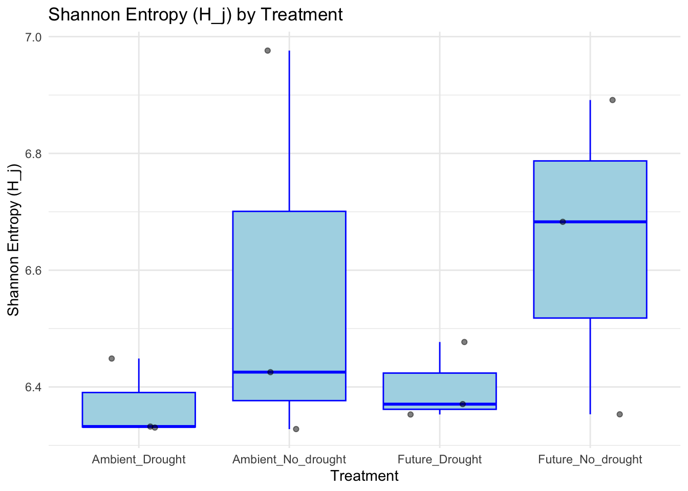
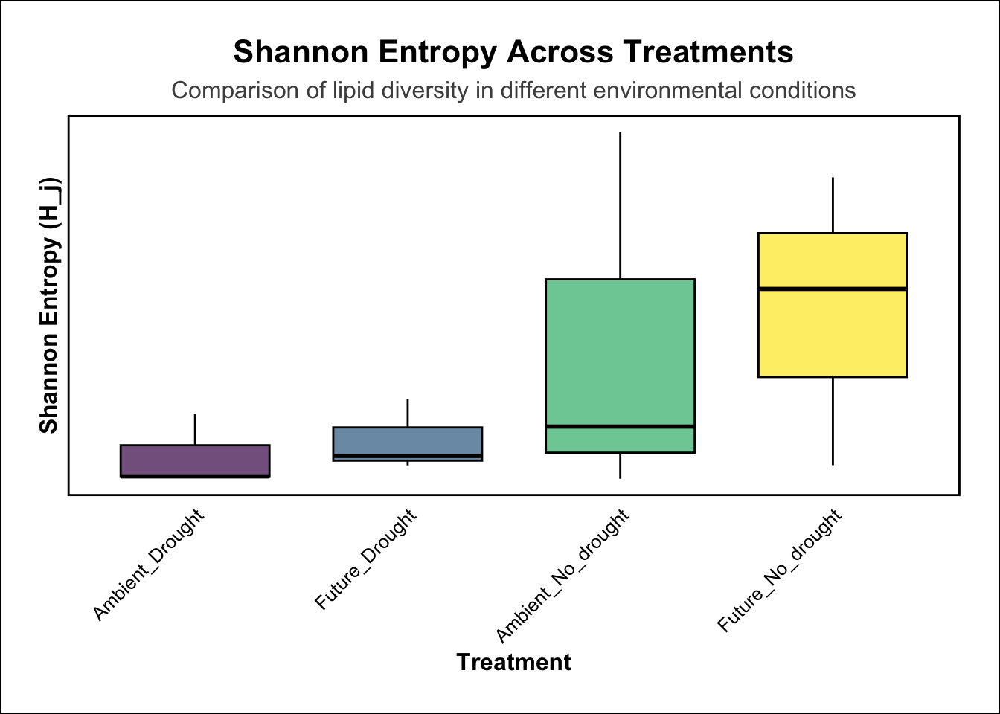
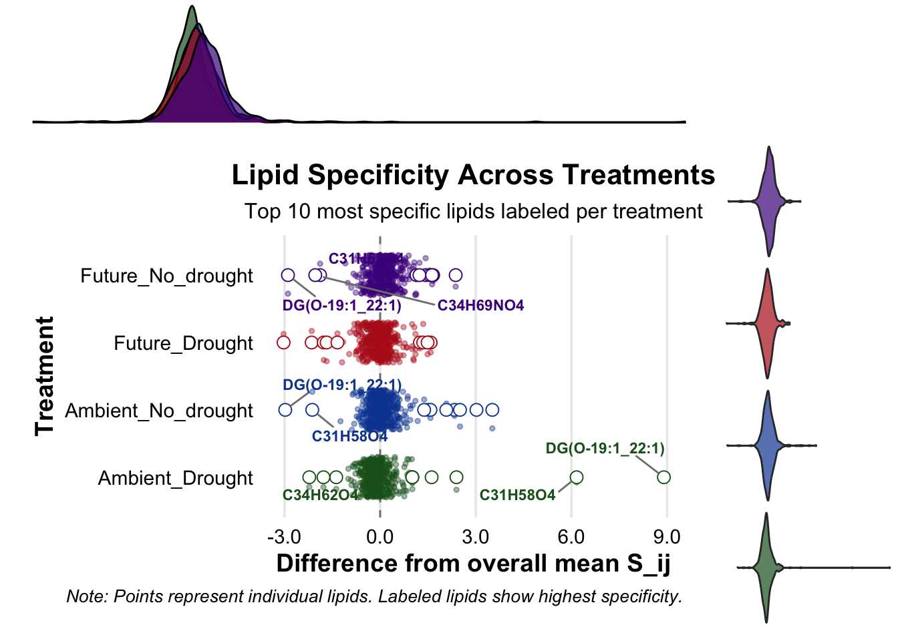

── Conflicts ────────────────────────────────────────── tidyverse_conflicts() ──
✖ dplyr::filter() masks stats::filter()
✖ dplyr::lag() masks stats::lag()
ℹ Use the conflicted package (<http://conflicted.r-lib.org/>) to force all conflicts to become errors
library(ggrepel)library(scales)
Attaching package: 'scales'
The following object is masked from 'package:purrr':
discard
The following object is masked from 'package:readr':
col_factor
The following object is masked from 'package:viridis':
viridis_pal
library(gridExtra)
Attaching package: 'gridExtra'
The following object is masked from 'package:dplyr':
combine
# Load the Excel filefile_path <-'Fig5-ALL-concentration-updated.xlsx'df <-read_excel(file_path, sheet ='SIRIUS-STD')# Sample data with combined treatment typesample_data <-data.frame(Sample =c(19, 22, 36, 28, 44, 49, 35, 40, 52, 27, 43, 48, 50),Type1 =c("Ambient", "Ambient", "Ambient", "Ambient", "Ambient", "Ambient", "Future", "Future", "Future", "Future", "Future", "Future", "Future"),Type2 =c("No_drought", "No_drought", "No_drought", "Drought", "Drought", "Drought", "No_drought", "No_drought", "No_drought", "Drought", "Drought", "Drought", "Drought"),Weight =c(2.054, 1.965, 2.063, 2.048, 2.063, 2.082, 2.065, 2.032, 2.033, 2.071, 2.028, 2.027, 0.178))sample_data$Combined_Treatment <-paste(sample_data$Type1, sample_data$Type2, sep ="_")# Mapping sample numbers to treatment columnssample_to_column <-list(`19`='Ambient_No_drought_Sample_19',`22`='Ambient_No_drought_Sample_22',`36`='Ambient_No_drought_Sample_36',`28`='Ambient_Drought_Sample_28',`44`='Ambient_Drought_Sample_44',`49`='Ambient_Drought_Sample_49',`35`='Future_No_drought_Sample_35',`40`='Future_No_drought_Sample_40',`52`='Future_No_drought_Sample_52',`27`='Future_Drought_Sample_27',`43`='Future_Drought_Sample_43',`48`='Future_Drought_Sample_48')# Filter out rows where the corresponding LOQ column value is not 1 (good value)concentration_cols <-grep('Concentration$', names(df), value =TRUE)loq_cols <-grep('Concentration > LOQ$', names(df), value =TRUE)for (loq_col in loq_cols) { df <- df %>%filter(df[[loq_col]] ==1)}# Creating a new dataframe to hold the rearranged columnsfiltered_df <- df %>%select(GlobalID, `Molecule List`, LipidMolecule)# Renaming the columns based on combined treatment type and sample numberfor (i in1:nrow(sample_data)) { sample <- sample_data$Sample[i] treatment_col <-paste(sample_data$Combined_Treatment[i], 'Sample', sample, sep ="_") sample_col <-paste(sample, 'Sum Total Area Concentration', sep =" ")if (sample_col %in%names(df)) { filtered_df[[treatment_col]] <- df[[sample_col]] }}# Creating the new dataframe with the desired format including GlobalIDnew_format_data_with_id <-data.frame(GlobalID =integer(),Molecule.List =character(),LipidMolecule =character(),Sample =integer(),Concentration =numeric(),Treatment =character(),stringsAsFactors =FALSE)# Populating the new dataframe with GlobalIDfor (i in1:length(sample_to_column)) { sample <-as.numeric(names(sample_to_column)[i]) column <- sample_to_column[[i]] treatment_type <-strsplit(column, '_Sample_')[[1]][1]for (j in1:nrow(filtered_df)) { new_format_data_with_id <-rbind(new_format_data_with_id, data.frame(GlobalID = filtered_df$GlobalID[j],Molecule.List = filtered_df$`Molecule List`[j],LipidMolecule = filtered_df$LipidMolecule[j],Sample = sample,Concentration = filtered_df[[column]][j],Treatment = treatment_type )) }}output_path <-"information-theory-indices1.xlsx"write_xlsx(new_format_data_with_id, output_path)# Display the final dataframeprint(head(new_format_data_with_id))
# First, let's make sure we have the treatment information for each samplesample_treatments <- data %>%select(Sample, Treatment) %>%distinct()# Join H_j with treatment informationH_j_with_treatment <- H_j %>%left_join(sample_treatments, by ="Sample")# Create a box plotshannon_plot <-ggplot(H_j_with_treatment, aes(x = Treatment, y = H_j)) +geom_boxplot(fill ="lightblue", color ="blue") +geom_jitter(width =0.2, alpha =0.5) +theme_minimal() +labs(title ="Shannon Entropy (H_j) by Treatment",x ="Treatment",y ="Shannon Entropy (H_j)")# Display the plotprint(shannon_plot)

# Calculate median H_j for each treatmentH_j_median <- H_j_with_treatment %>%group_by(Treatment) %>%summarize(median_H_j =median(H_j)) %>%arrange(median_H_j)# Reorder the Treatment factor based on median H_jH_j_with_treatment$Treatment <-factor(H_j_with_treatment$Treatment, levels = H_j_median$Treatment)# Create the enhanced plotp <-ggplot(H_j_with_treatment, aes(x = Treatment, y = H_j, fill = Treatment)) +geom_boxplot(width =0.7, color ="black", alpha =0.7) +scale_fill_viridis(discrete =TRUE, option ="D") +theme_minimal(base_size =12) +theme(legend.position ="none",axis.text.x =element_text(angle =45, hjust =1, vjust =1),axis.text =element_text(color ="black"),axis.title =element_text(face ="bold"),panel.grid.major.x =element_blank(),panel.grid.minor =element_blank(),panel.border =element_rect(color ="black", fill =NA, size =1),plot.title =element_text(hjust =0.5, face ="bold", size =16),plot.subtitle =element_text(hjust =0.5, size =12, color ="grey30"),plot.caption =element_text(hjust =1, size =10, color ="grey50"),plot.background =element_rect(fill ="white"),plot.margin =margin(t =20, r =20, b =20, l =20, unit ="pt") ) +labs(title ="Shannon Entropy Across Treatments",subtitle ="Comparison of lipid diversity in different environmental conditions",x ="Treatment",y ="Shannon Entropy (H_j)" ) +scale_y_continuous(breaks =seq(7.3, 7.8, by =0.1), labels =sprintf("%.1f", seq(7.3, 7.8, by =0.1)))
Warning: The `size` argument of `element_rect()` is deprecated as of ggplot2 3.4.0.
ℹ Please use the `linewidth` argument instead.
print(p)

# First, let's join the treatment information to S_ijS_ij_with_treatment <- S_ij %>%left_join(sample_treatments, by ="Sample")# Now, let's aggregate S_ij by treatment and lipid moleculeS_ij_by_treatment <- S_ij_with_treatment %>%group_by(Treatment, LipidMolecule) %>%summarize(mean_S_ij =mean(S_ij, na.rm =TRUE)) %>%ungroup()
`summarise()` has grouped output by 'Treatment'. You can override using the
`.groups` argument.
# Calculate overall mean S_ij for each lipid molecule to order themlipid_order <- S_ij_by_treatment %>%group_by(LipidMolecule) %>%summarize(overall_mean_S_ij =mean(mean_S_ij, na.rm =TRUE)) %>%arrange(desc(overall_mean_S_ij)) %>%pull(LipidMolecule)# Select top 30 lipid molecules for better visibilitytop_30_lipids <- lipid_order[1:30]# Calculate mean S_ij across all treatments for each lipidoverall_mean <- S_ij_by_treatment %>%group_by(LipidMolecule) %>%summarize(overall_mean =mean(mean_S_ij, na.rm =TRUE))# Calculate difference from overall mean for each lipid-treatment combinationS_ij_diff <- S_ij_by_treatment %>%left_join(overall_mean, by ="LipidMolecule") %>%mutate(difference = mean_S_ij - overall_mean)# Find top 5 most specific lipids for each treatmenttop_specific <- S_ij_diff %>%group_by(Treatment) %>%top_n(5, difference) %>%ungroup()# Increase the number of top specific lipids to label for each treatmentn_top <-10# You can adjust this number as neededtop_specific <- S_ij_diff %>%group_by(Treatment) %>%top_n(n_top, abs(difference)) %>%ungroup()# Create a custom color palettecustom_palette <-c("#1B5E20", "#0D47A1", "#B71C1C", "#4A148C")#custom_palette <- c("#E69F00", "#56B4E9", "#009E73", "#F0E442")# Create the main plotmain_plot <-ggplot(S_ij_diff, aes(x = difference, y = Treatment, color = Treatment)) +geom_vline(xintercept =0, linetype ="dashed", color ="gray50") +geom_jitter(alpha =0.4, height =0.3, size =1) +geom_point(data = top_specific, size =3, shape =21, fill ="white") +geom_text_repel(data = top_specific, aes(label = LipidMolecule), box.padding =0.7, point.padding =0.5,force =10,segment.color ="grey50",size =3,fontface ="bold") +scale_color_manual(values = custom_palette) +scale_x_continuous(labels =label_number(accuracy =0.1)) +theme_minimal(base_size =14) +theme(legend.position ="none",panel.grid.minor =element_blank(),panel.grid.major.y =element_blank(),axis.text =element_text(color ="black"),axis.title =element_text(face ="bold"),plot.title =element_text(face ="bold", size =16, hjust =0.5),plot.subtitle =element_text(size =12, hjust =0.5),plot.caption =element_text(size =10, hjust =1, face ="italic"),plot.background =element_rect(fill ="white", color =NA),plot.margin =margin(t =20, r =20, b =20, l =20) ) +labs(title ="Lipid Specificity Across Treatments",subtitle =paste("Top", n_top, "most specific lipids labeled per treatment"),x ="Difference from overall mean S_ij",y ="Treatment",caption ="Note: Points represent individual lipids. Labeled lipids show highest specificity." )# Create density plots for the top and right sidestop_density <-ggplot(S_ij_diff, aes(x = difference, fill = Treatment)) +geom_density(alpha =0.7) +scale_fill_manual(values = custom_palette) +theme_void() +theme(legend.position ="none")right_density <-ggplot(S_ij_diff, aes(x = Treatment, y = difference, fill = Treatment)) +geom_violin(alpha =0.7, scale ="width") +coord_flip() +scale_fill_manual(values = custom_palette) +theme_void() +theme(legend.position ="none")# Combine the plotscombined_plot <-grid.arrange( top_density, NULL, main_plot, right_density,ncol =2, nrow =2,widths =c(4, 1), heights =c(1, 4))
Warning: ggrepel: 32 unlabeled data points (too many overlaps). Consider
increasing max.overlaps

# Save the plotggsave("lipid_specificity_publication_quality.pdf", combined_plot, width =15, height =12, units ="in", dpi =300)
Warning: ggrepel: 14 unlabeled data points (too many overlaps). Consider
increasing max.overlaps